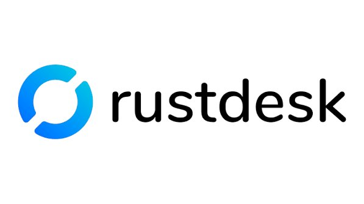
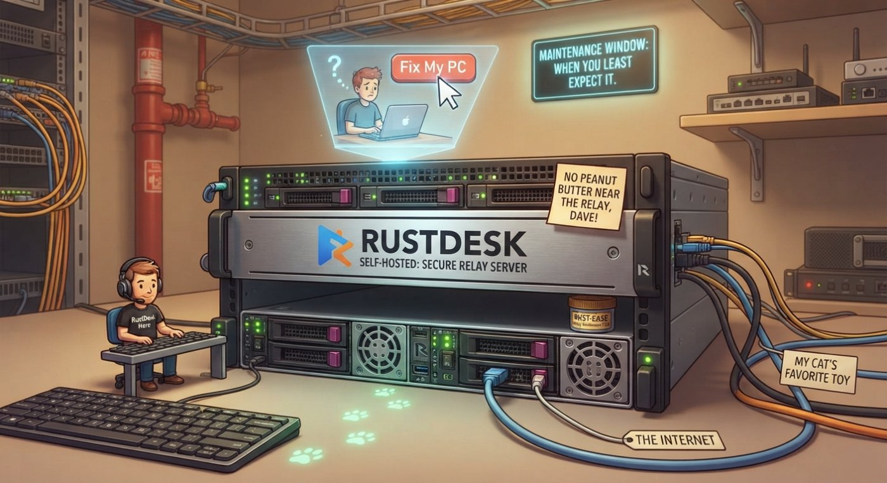
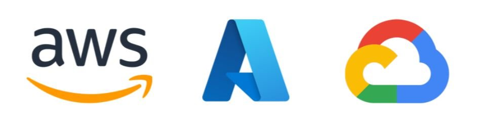
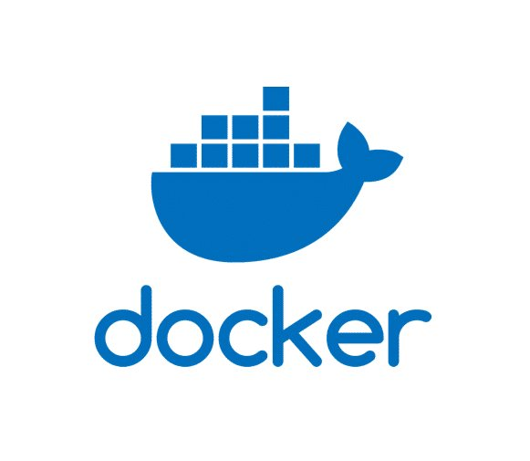
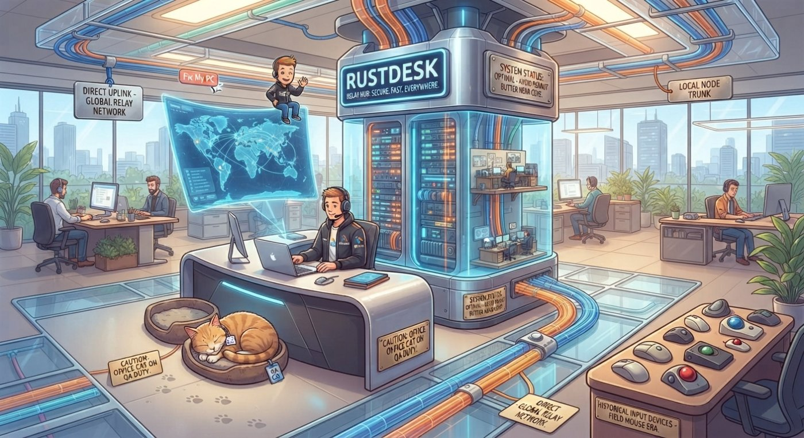

RustDesk: Your Remote Desktop, Your Infrastructure, Your Rules
PART1
RustDesk: Your Remote Desktop, Your Infrastructure, Your Rules Why I decided to stop depending on somebody else's infrastructure and host my own RustDesk server using Docker - The day I decided enough was enough.

I've been using RustDesk as my remote desktop solution, and for a good reason: it's an excellent piece of software. It's lightweight, practical, cross-platform, and does exactly what I need without forcing me into an expensive commercial subscription.
But there's one little detail that is easy to overlook: by default, many users rely on RustDesk's publicly operated rendezvous and relay infrastructure. And that's where things started getting interesting.
In January 2026, RustDesk users started reporting suspicious connection attempts from automated clients identified as "Go Client". What initially looked like random connection requests turned out to be part of a much larger botnet campaign involving automated scanning and password-guessing attempts.
On 1 February, the RustDesk team announced that the attack involved millions of participating IP addresses. Their temporary response was to restrict public-server connections to users located in the same city. Yes, you read that correctly. Same-city connections.
The restriction was subsequently lifted when the attack appeared to have paused, only for the botnet activity to resume a few days later. I understand the security concerns. I understand why the developers had to react. I certainly don't envy anyone responsible for protecting a public service against millions of malicious connection attempts.
But here's the problem.
If I need remote access to a computer somewhere else, I need remote access. It doesn't matter whether that computer is in the next room, another city, another country, or halfway around the world. I don't want a geographical restriction, a temporary policy change, or somebody else's infrastructure decisions determining whether I can reach my own machines.

And that was the moment I decided to take matters into my own hands. The solution: host your own RustDesk server RustDesk supports self-hosting. In other words, instead of depending on the public infrastructure, you can operate your own backend. There are two main components: • hbbs – ID / Rendezvous server: Helps clients find each other and establish connections. • hbbr – Relay server: Relays traffic when a direct peer-to-peer connection cannot be established. By running these components yourself, you control the infrastructure responsible for coordinating your remote connections and relaying traffic. And the best part? The open-source RustDesk Server is free. You don't need an enterprise licence, a dedicated datacentre, or particularly powerful hardware.
You can run it on:
• A NAS, such as Synology.
• An on-premises Linux server.
• A virtual machine in your homelab.
• A VPS from a hosting provider.
• Microsoft Azure or Amazon AWS.
• Pretty much any suitable Linux environment with network connectivity.

There are different deployment methods, too. Native Linux installation, Docker, Docker Compose, and other approaches are available. I chose Docker.

Why? Because I like having services isolated, deployments reproducible, configuration manageable, and updates relatively straightforward. It also makes moving the service to another host considerably easier. My deployment consisted of the two RustDesk server components running as Docker containers on a Linux VPS, using host networking. I configured custom ports, firewall rules, key enforcement, automated IP blocking, and DNS.
It took some work. It wasn't a five-minute installation, but once everything was configured and tested, I had exactly what I wanted: My own remote desktop infrastructure, under my control.
What did I actually implement? Rather than turn this article into yet another step-by-step installation guide, I want to share some of the decisions I made along the way.
There are plenty of tutorials explaining how to install RustDesk. What interests me more is what you should consider when exposing any remote-access service to the internet.
Here is what I implemented.
1. Docker deployment Both hbbs and hbbr run in Docker containers. This provides a manageable deployment environment and helps separate the application from the underlying operating system. One important distinction: containers are not virtual machines. They share the host kernel, and isolation depends on the Docker configuration and security boundaries. In my case, I used host networking, which is convenient for RustDesk's networking requirements but does not provide the same network isolation as Docker bridge mode. Don't treat Docker as a magic security shield. Keep the host patched, minimise container privileges, and understand the networking mode you're using.
2. Custom ports Why advertise to the entire internet that you're running a RustDesk server on its standard ports? I moved away from the default ports and selected my own high-numbered ports. For example, use the 48200+ range as a starting point for custom allocation. This isn't a substitute for proper security. A determined scanner can still discover services running on non-standard ports. However, it can reduce the amount of automated noise generated by scanners looking for common services on their default ports. One important detail: if you use Docker host networking, the application itself must listen on the custom ports. You cannot rely on Docker's normal external-to-internal port mapping in that mode.
3. Cryptographic key enforcement This is one setting I would not overlook. RustDesk uses a cryptographic key pair to establish trust in your self-hosted server. Keep your private key private, back it up securely, and distribute the corresponding public key only to your intended clients. Make sure your server's key-validation configuration is correct. In particular, hbbr has different default key-validation behaviour from hbbs, so don't assume that configuring one automatically protects the other. The -k parameter is relevant here. The point is to ensure that your clients trust your server's identity rather than blindly accepting another server claiming to be yours. Remember, this is not a replacement for strong authentication on the remote computers themselves.
4. Firewall configuration A working RustDesk server needs more than Docker containers that successfully start. You must make sure the required ports are accessible through every relevant firewall.
In my deployment, that meant aligning:
• The Linux host firewall.
• Docker networking.
• The VPS provider's external firewall / ingress rules.
• The RustDesk application port configuration.

If one layer is configured differently from another, you can end up with a server that appears healthy but cannot establish connections properly. I also recommend exposing only the ports you actually need.
5. Fail2Ban – automatic brute-force protection I wanted something more than simply watching logs and manually blocking suspicious addresses. I integrated Fail2Ban on the Linux host. It monitors the Docker container JSON logs, looks for relevant key-mismatch failures, and can automatically block offending IP addresses using the host's firewall rules, including the DOCKER-USER chain where appropriate. This gives me an additional layer of protection without having to sit in front of the server all day.
A word of caution: log formats and message patterns can change between versions. Test your Fail2Ban filters against your actual logs, and verify that the resulting firewall rules really block the intended traffic.
6. Cloudflare DNS – grey cloud, not orange I use a dedicated DNS record for my RustDesk server through Cloudflare. However, there is a very important distinction. The DNS record is configured as DNS Only (grey cloud) rather than proxied (orange cloud).
Why? RustDesk relies on native TCP and UDP traffic, not simply ordinary HTTP or HTTPS requests. Cloudflare's standard HTTP reverse proxy is not a generic proxy for RustDesk's native traffic. Putting the service behind the ordinary orange-cloud proxy can break connectivity. So, use Cloudflare for DNS resolution, but don't assume its normal web proxy will handle your RustDesk connections.
PART 2
My top tips: things I'd recommend doing
You don't have to reproduce my exact setup. Everyone has different hardware, budgets, technical skills and infrastructure.
However, regardless of where or how you host RustDesk, there are a few things I would strongly recommend considering.
1. Don't leave your server without key validation. Configure your cryptographic keys properly, including relay key validation where appropriate. Keep private keys safe and configure every client to trust your server's public key.
2. Don't expose unnecessary ports. Only open the ports RustDesk actually requires. Consider custom ports to reduce automated scanning noise, but never confuse obscurity with security.
3. Use a firewall. Whether you're hosting at home or in the cloud, use the firewall available to you. Restrict access wherever practical and check both your operating system and hosting provider firewall rules.
4. Consider automated IP blocking. Fail2Ban or an equivalent solution can help identify repeated suspicious activity and automatically block offending addresses. It's particularly useful when your server is publicly accessible.
5. Keep Docker and the host updated. Running containers doesn't mean you can forget about maintenance. Update your Docker engine, server images and underlying operating system. Don't blindly run privileged containers or grant unnecessary access to the host.
6. Protect your server keys and configuration. Back up the RustDesk data directory, especially your key material. Losing your server's identity can mean having to reconfigure every client. Keep backups somewhere other than the server itself, and make sure they're actually recoverable.
7. Think carefully about DNS and proxies. If you're using Cloudflare, remember that ordinary DNS proxying isn't designed for RustDesk's native TCP/UDP traffic. DNS Only is the straightforward choice for this deployment.
8. Don't forget the remote computers themselves. Your server is only one part of the security picture. Set strong, unique permanent passwords, enable client-side two-factor authentication where supported, and consider IP or ID allowlisting. Never automatically accept unknown connection requests.
9. Monitor your logs. You don't need an expensive monitoring platform. Even occasionally reviewing Docker logs, authentication failures and firewall activity can reveal problems before they become bigger ones.
10. Test your setup before you depend on it. Test connections from different networks, not just your home LAN. Verify both direct and relayed connections, restart behaviour, firewall rules and recovery from a server restart.
A server that works from your own Wi-Fi isn't necessarily a server that works reliably from anywhere.
So, where should you host it? There isn't one correct answer, and I deliberately don't want this article to become a Docker-versus-NAS-versus-VPS argument. Here are some perfectly reasonable options:
NAS (Synology, etc.) Suitable for: Homelab users who already own suitable hardware
On-premises Linux server Suitable for: People with existing infrastructure
Virtual machine Suitable for: Homelabs and existing virtualisation environments
VPS Suitable for: People who want an independently hosted server without maintaining physical hardware
Azure / AWS Suitable for: Organisations already using cloud infrastructure Docker on a small server People who want a portable, manageable deployment
The important thing is to understand the trade-offs. For example, hosting at home means considering your internet connection, public IP, router configuration and availability. A VPS gives you an independently hosted environment but introduces a monthly cost and another machine to maintain.
Choose what works for you.
Final thoughts I didn't set out to become a RustDesk server administrator. I simply wanted a reliable remote desktop solution that would remain available when I needed it. But sometimes, depending on somebody else's infrastructure means depending on somebody else's decisions, priorities, security incidents and temporary restrictions.
The January/February 2026 incident was a good reminder of that. I appreciate the work the RustDesk developers do, and I understand the challenges of operating a public service at scale. But I also believe that if a piece of software offers self-hosting, we should take that option seriously. You don't have to be an enterprise. You don't need a rack full of servers. You don't even need to spend a fortune.
A small VPS, an existing NAS, or a modest home lab machine can be enough. My advice? Stop depending on infrastructure you don't control when you have a perfectly reasonable option to run your own.
Your infrastructure. Your rules. Your remote access.
And hopefully, fewer surprises when you need to connect to a machine on the other side of the world. ________________________________________
Useful official resources:
• RustDesk – Self-hosting documentation
• RustDesk – Docker deployment guide